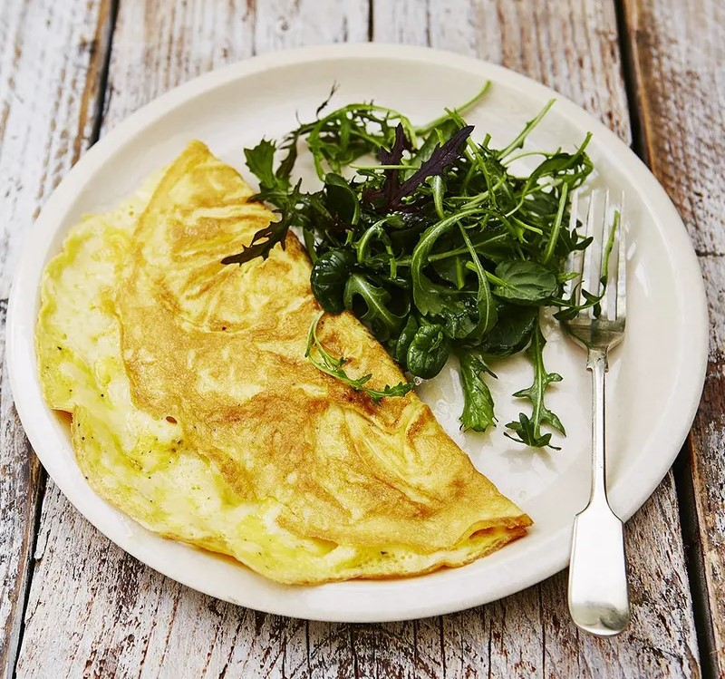

Omelette

A tasty breakfast, lunch or dinner in no time.Plain or with veggies, omelettes are really easy to knock together and super-satisfying.
Cook Time: 10 minutes
Serves 1
Ingredients
- 2 large free-range eggs
- 1 small knob of unsalted butter
- 1 small handful of grated Cheddar cheese (optional)
Optional: Tomato & Basil Omelette
- 2 or 3 sprigs of fresh basil
- 1 handful of cherry tomatoes olive oil
Method
- For a basic omelette, crack the eggs into a mixing bowl with a pinch of sea salt and black pepper. Beat well with a fork
- Heat a small knob of butter in a small frying pan on a low heat, and once melted and bubbling, add the eggs and move the pan around to spread them out evenly.
- When the omelette begins to cook and firm up, but still has a little raw egg on top, sprinkle over the cheese (if using). I sometimes grate mine directly on to the omelette.
- Using a spatula, ease around the edges of the omelette, then fold it over in half. When it starts to turn golden brown underneath, remove the pan from the heat and slide the omelette on to a plate.
- For a tomato and basil omelette, pick and roughly tear the basil leaves. Chop the tomatoes in half, then add to a hot frying pan with a small knob of butter, a drizzle of oil and a pinch of salt and pepper. Fry and toss around for 1 minute, then turn the heat down to medium and sprinkle over the basil leaves. Add the eggs and move the pan around to spread them out evenly. Continue as for the basic omelette.
Nutritional Information (for the basic omelette)
- Calories: 321 kcal
- Fat: 27.6g
Saturates: 12.5g
Sugars: 0.1g
Salt: 1.7g
Protein: 19.4g
Carbs: 0.1g
Fibre: 0g